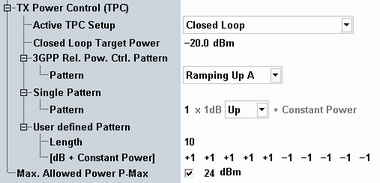
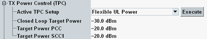

This section configures settings for UL power control via TPC commands.
For carrier aggregation scenarios, you can configure the settings per uplink, if joint UL power control is disabled.

Selects the TPC setup to be executed. All setups use relative (accumulative) TPC commands and are only executed when a connection has been established. During connection setup, 0-dB commands are sent.
The string "Adjusted" behind a node of settings indicates that the currently selected setup is further configured by this node.
- "Min Power", "Max Power", "Constant Power"
The UE is commanded to maximum power, to minimum power or is ordered to keep the UL power constant.
If one of these setups is selected, it is executed automatically without additional user action. - "3GPP Relative Power Control"
Ramping up or down test pattern according to 3GPP TS 36.521, section 6.3.5.2.
Select the test pattern via "3GPP Rel. Pow. Ctrl. Pattern" and start the pattern via the "Execute" button.
For details about the test pattern, see "Relative Power Control Tests".
This TPC setup is not allowed if "Joint UL Power" is enabled. - "Single Pattern", "User-defined Single Pattern"
A configurable TPC pattern is sent to the UE when the "Execute" button is pressed. Before and after execution of the pattern, the power is kept constant.
A single pattern contains only one type of TPC command while a user-defined single pattern allows you to combine different TPC commands. - "User-defined Continuous Pattern"
A configurable user-defined TPC pattern is sent to the UE continuously. If this setup is selected, it is executed automatically without additional user action.
While this setup is selected, the relevant parameter for pattern configuration is marked by the string "Adjusted". - "Alternating +1, -1, ..."
An alternating TPC pattern of plus and minus 1-dB commands is sent to the UE continuously. If this setup is selected, it is executed automatically without additional user action. - "Closed Loop"
The UE is commanded to the configured target power. Plus 1-dB or minus 1-dB commands are sent until the difference between the measured UL power and the target power is less than 1 dB. Afterwards, the power is kept constant (0-dB commands).
This setup is executed automatically without additional user action. Even the measurement of the uplink power is performed automatically in the background. No additional measurement application is needed. - "Flexible UL Power"
This setup is only available for uplink carrier aggregation, if "Joint UL Power" is grayed-out. The setup configures different PCC and SCC uplink powers for some seconds. The duration is long enough for a measurement, but short enough to prevent a synchronization error. A synchronization error can nevertheless occur if you decrease the "Out of Sync" timeout value in the network settings.
The following parameters are related to this TPC setup.
When you select this TPC setup, the UE is commanded to the closed loop target power. If you press the "Execute" button, the UE is commanded to the PCC and SCC target powers. After some seconds, it is commanded back to the closed loop target power.
For a combined signal path measurement while the two powers are different, configure your measurement as single-shot measurement with a small statistic count. Use the TPC trigger (SCC) to start the measurement.
Depending on the current configuration, some values are grayed out. The reason is displayed in that case, for example active PUCCH scheduling (number of RBs = 0). TPC setups for which skipping a bit is no problem, are always available (for example max power or closed loop, in contrast to single or alternating pattern).
If you change the configuration so that the currently active setup is no longer allowed, the TPC setup is corrected automatically and a notice is displayed.
Remote command:Defines the target powers for the TPC setup "Flexible UL Power".
Remote command:Selects the pattern to be executed for the TPC setup "3GPP Relative Power Control". The available up and down patterns are defined in 3GPP TS 36.521, section 6.3.5.2. See also "Relative Power Control Tests".
Remote command:Defines the target power for the TPC setup "Closed Loop". The target power applies to PUCCH and PUSCH.
For carriers with a power master CC, the additional setting "Offset" is displayed. It shifts the target power relative to the target power of the power master. See also "Joint UL Power, Power Master CC".
Remote command:Defines a pattern for the TPC setup "Single Pattern". The pattern consists of up to 35 up (+1 dB) or down (-1 dB) commands.
Remote command:Defines a pattern for the TPC setups "User-defined Single Pattern" and "User-defined Continuous Pattern". The pattern consists of up to 20 TPC commands (-1 / 0 / +1 / +3 dB).
Remote command: